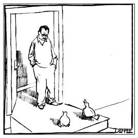

"Varoluş özden önce gelir." Bu önermeye katılıyorsanız
bir varoluşçusunuz demektir. Katılmıyorsanız
varsınızdır ama özde yoksunuzdur.
DIMITRI: Şimdi itiraf etmeliyim ki Tasso, bazen senin gibi olmayı diliyorum.tasso: İlginç. Ben de onun seni kötü etkilediğini düşünüyordum.
TASSO: Ama olabilirsin! Varoluşçu açıdan bakarsak sen tümüyle kendi-kendini yaratan bir varlıksın! Yani sen, yarattığınsın!
DIMITRI: A, süper! Çünkü hep senin kadar uzun boylu olmak istemişimdir.
Varoluşçuluğu kavramak için önce yaşamın gerçek resminin sadece dıştan bakışla görülebileceğine yönelik felsefi bakış açısını, yani on dokuzuncu yüzyıldan Hegelci Mutlakçılık'a bakmamız gerek. "En iyi komedinin büyük kısmı Hegelci Mutlak ile varoluşçu yabancılaşma arasındaki gerilimde bulunabilir," diyen komedyen Rodney Dangerfield mıydı? Muhtemelen hayır. Ama bu tümceyi o sarf etmiş olsaydı, şu klasik fıkrayı kastettiğini düşünebilirdik:
Adam, en iyi arkadaşının karısıyla yataktayken, arkadaşının arabasının sesini duyar. Derhal fırlayıp dolaba saklanır. Arkadaşı gelir ve ceketini asmak için dolabı açtığında adamı çırılçıplak bulur.
"Lenny, ne yapıyorsun burada?"
Lenny omuz silker: "E, herkes bir yerde olmalı."
Bu, varoluşçu bir soruya verilmiş Hegelci bir yanıttır. Koca, onca insan arasında neden Lenny'nin bu varoluşçu durumda — çıplak ve dolabında— bulunduğunu öğrenmek istemektedir. Ama Lenny, kendinden menkul nedenlerle farklı bir soruyu yanıtlamayı seçmiştir: "Neden birisi, hiçbir yerde olmak yerine bir yerde olur?" Ancak Hegel gibi yüce bir Alman filozofuysanız anlamlı gelebilecek bir sorudur bu.
Georg Wilhelm Friedrich Hegel, tarihin "Mutlak Ruh "un açığa çıkışı olduğunu ileri sürmüştür. Bir çağın ruhu (mesela 1950'lerin konformizmi) kendi antitezini (1960'ların hippi hareketini) üretmiştir ve ikisinin çarpışması yeni bir sentez (1970'lerin Beatles tarzı saç kesimli Wall Street bankerleri misali "Plastik hippilerini") yaratmıştır.
Ve bu böyle sürekli bir tez/antitez/sentez diyalektiği şeklinde devam eder...
Hegel tarihin dışına sıçradığını ve "Bütüne" aşkın bir noktadan baktığını düşünmüştü. Bu bakış açısına "Mutlak" adını verdi. Oradan her şey epey iyi görünüyordu: Savaşlar? Alt tarafı diyalektikte bir uğrak... Salgınlar? Bir başka uğrak... Endişe? Endişeye mahal yok... Diyalektik devredeydi ve yapacak hiçbir şey yoktu. Sadece orada durmak ve manzaraya takılmak... Georg Wilhelm Friedrich Hegel tarihi Tanrı'nın seyrettiği yerden seyrettiği fikrindeydi!
* * *
Bette Midler'ın, dünyaya yükseklerden bir yerlerden baktığını ve her şeyin uyum içinde ve şahane gittiğini hayal ettiği şarkısı "From a Distance"ı düşünün... Hegel işte bu mesafeden bakıyordu. Şarkı, bilindiği üzere, bizzat Tanrı'nın Bette'nin omzu üzerinden bakıp manzaranın tümünü görmesiyle sona erer... Bette Midler'ın Hegelci olduğu kimin aklına gelirdi?
* * *
Sıra Hegel'in çağdaşı Søren Kierkegaard'da. Bu adam feci kızgın: "Mutlak'ın bakış açısından her şeyin gayet iyi olması ne fark eder?" diye soruyor. Bu, var olan bireylerin bakış açısı değildir ve olamaz. Varoluşçuluk işte bu saptamadan doğmuştur. Søren, "Ben Tanrı değilim," demiştir. "Ben, bir bireyim. Yukarıdan bakılınca her şeyin pek huzurlu görünmesi kimin umurunda? Ben burada, ortasındayım ve endişeliyim. Tehlike ve umutsuzluk içindeyim. Ben'den bahsediyorum. E, bana ne evrenin yuvarlanıp gidişi kaçınılmazsa? Üstüme yuvarlanıyor yahu!"
Yani eğer sizi dolabında bulan Kierkegaard size "Ne yapıyorsun burada?" derse, sakın ha "Herkes bir yerde olmalı," demeyin. Önerimiz, doğaçlamaya kaçın.
Yirminci yüzyıl Fransız filozofu Jean-Paul Sartre, Kierkegaard'ın "bireyin ürkütücü yalıtılmışlığı" fikrini aldı ve bunun insani özgürlük ile sorumluluklarla bağını kurmaya girişti. Sartre'ın "Varoluş özden önce gelir" deyişi insanların, mesela bir elbise askısınınki gibi önceden belirlenmiş bir özü bulunmadığı anlamına gelir. Yani bizler belirlenmemişizdir ve kendimizi yeniden yaratmakta özgürüzdür.
* * *
Sartre patlak gözlü, pek de yakışıklı sayılamayacak bir adamdı. Bu nedenle Sartre çağdaşı varoluşçu Albert Camus'un, onun insan özgürlüğü kavrayışını, "Heyhat, belli bir yaştan sonra her insan taşıdığı yüzün sorumluluğunu almalıdır," diyerek genişletmesine alınmış olabilir. İşin komiği, Camus de fazlasıyla Humphrey Bogart'a benzerdi.
* * *
Kendimizi sadece sabit kimlikli nesneler olarak görürsek Olmayı (Büyük O ile) bırakırız. Ve kendimizi nesneler olarak görmenin yollarından biri toplumsal rollerle özdeşleşmektir. Bu kimliklenmeye Sartre mauvaise foi, yani kötü inanç der. Doğrusu pek iyi bir şey olduğu söylenemez.
Sartre, kafeteryadaki garsonu izler ve garson olmak, garsonmuş gibi davranmaktır sonucuna ulaşır. Yani garsonlar garson olmayı, garson taklidi yaparak öğrenirler. Garsonlar belli bir şekilde yürür, belli bir tavırla hareket eder, insanlarla ölçülü bir samimiyet kurarlar, vesaire. Bu durum, garson yaptığının sadece bir rol olduğunun farkında olduğu sürece bir sorun oluşturmaz. Ama gerçekten garson olduklarına inanan garsonlar tanırız. Özünde garson olduğuna inanan garsonlar! Çok kötü inanç!
Kimi fıkralar abartılı örnekler vasıtasıyla, hiç düşünmeden kendimizi toplumsal grubumuzun tavır ve değerleriyle tanımlayışımızla alay eder. Bu, yani reductio ad absurdum,[11] kendi başına bir felsefi kumardır.
* * *
Reductio ad absurdum, bir öncülü saçmalık noktasına taşıyıp, öyleyse zıddının doğru olduğunu öne süren bir mantıksal kanıtlama biçimidir. Yakın dönemlerde ortalıkta dolanan reductio tartışmalarından biri şudur: "Evlilik fikrini aynı cinsten birliktelikleri içerecek şekilde genişletirsek, insanlarla ornitorenklerin evlenmelerini onaylamamızı ne engelleyebilir?"
* * *
Aşağıdaki reductio fıkrasındaysa, fıkranın kahramanı Solomon, bir grupla özdeşleşmenin doğasında bulunan kötü inanca yeni bir anlam katıyor:
Abraham ve Solomon, yürüyüşe çıkarlar. Bir Katolik kilisesinin önünden geçerlerken tabelada şu yazıyı okurlar: "Dinimize Geçen Herkese 1000 Dolar Veriyoruz." Solomon kiliseye girip neler döndüğünü öğrenmeye karar verir. Abraham ise dışarıda beklemeyi yeğler. Saatler geçtikten sonra nihayet Solomon kiliseden çıkar.
"E?" der Abraham, "ne oldu?"
"Din değiştirdim."
"Ciddi mi?" der Abraham. "Peki, bin doları aldın mı?"
"Siz Yahudiler," der Solomon hayretle, "paradan başka şey düşünmez misiniz yahu?"
(Siyaseten doğru davranmıyoruz; filozofuz biz. Buyurun, dava açın!)
Diğer yandan kendimizi, özgürlüğümüzde hiçbir kısıtlama gö zetmeksizin sınırsız imkânlara sahip görmemiz de kötü inançtır:
İki dana, çayırda otlamaktadır. Biri, ötekine sorar:
"Bu deli dana hastalığına ne diyorsun?"
"Bana ne?" der diğeri. "Helikopterim ben."
Varoluşçu filozoflar için hakiki kaygı —söylenişindeki acı tattan dolayı Almanca "angst" demeyi yeğlerler— tedavi ile icabına bakılacak patolojik bir semptom değildir. Hayır, söz konusu kaygı, bizzat insani varoluş koşullarımıza, yani ölümlülüğümüze, potansiyelimizi tümüyle gerçekleştiremeyişimize, anlamsızlık tehdidine verdiğimiz temel insani tepkidir. Sırf bu kadarı bile insana varoluşçu olacağıma Yeni Çağ filozofu olsaydım dedirtmeye yeter.
Varoluşçular, insanlık halinden geldiğini düşündükleri ölüm kaygısı gibi "varoluşçu kaygılar" ile aşağıda Norman'ın çektiği sıradan sinirsel kaygı arasında ayrım yapmaya pek meraklıdır:
Norman, doktorun karşısına geçer geçmez sucuk gibi terlemeye başlar: "Doktor, benim karaciğer kesin hasta..."
"Saçma," der doktor. "Karaciğerinde sorun olsa anlayamazsın bile. Hiçbir rahatsızlık hissetmezdin bir kere."
"Aynen, doktor," der Norman. "Dediğim belirti bu zaten."
Yirminci yüzyıl Alman varoluşçusu Heidegger, böyle bir durumda "Sen buna kaygı mı diyorsun, Norman?" diye soracaktır. "Daha ne yaşadın? Ve 'yaşamak' derken sürekli ölümü düşünmeyi kastediyorum!" Heidegger, "İnsan varoluşu ölüme-doğru-varlıktır," diyecek kadar ileri gitmişti. Hakikaten, gerçek anlamda yaşamak için ölümlülüğümüzle dürüstçe yüzleşmeli ve ölümün gölgesi altında anlamlı hayatlar yaşama sorumluluğunu üstlenmeli, ölüm gerçeğini yadsıyarak bireysel kaygıdan ve bireysel sorumluluktan kaçmaya çalışmamalıyız, diyordu.
Trafik kazasında can veren üç arkadaş Cennet kapısında yollanacakları yerlerin belirlenmesi için beklemektedir. Bir melek gelir ve tabutlarının başında aile ve dostlarının kendileri için neler söylediklerini duymayı arzu ettiklerini sorar.
"Umarım," der ilk adam, "herkes benim için iyi bir doktor ve aile babasıydı der."
İkincisi, "Bir öğretmen olarak pek çok çocuğun hayatında önemli bir fark yarattığımı söylemelerini isterim," der.
"Bense birilerinin," der üçüncüsü, " 'A, bakın, kımıldadı!' dediğini duymak isterim."
Heidegger için ölümün gölgesinde yaşamak sadece cesaret değildir; aynı zamanda gerçekten yaşamanın tek otantik yoludur çünkü sıramız her an gelebilir.

"Ördek olmak konusunu hiç düşünmüş müydün?"
Bu karikatür özgürlüğümüzün sınırlarını anlatıyor. Bir insan mesela Yehova Şahidi olmayı düşünebilir, bu anlaşılabilir bir şeydir. Ama ördek olmayı anlamlı bir şekilde düşünebilir mi?
Bu karikatüre gömülü bir diğer varoluşçu bilmece var: "Kim sanıyor bu ördekler kendilerini?"
Adam, falcıya Cennet'in neye benzediğini sorar. Falcı kristal küresine bakar ve "Hım," der, "bir iyi bir de kötü haber görüyorum. İyi haber şu: Cennet'te hepsi birbirinden güzel birçok golf sahası var."
"Vay! Harika yahu! Kötü haber ne peki?"
"Sahalardan biri yarın sabah 08.00'de adınıza ayırtılmış."
Hâlâ inkâr aşamasında mısınız? Buyurun o zaman:
Ressam: Nasıl gidiyor benim resimler?
Galeri sahibi:Valla haberler hem iyi hem kötü... Dün bir adam geldi ve senin, ölümünden sonra eserleri büyük değer kazanacak ressamlardan olup olmadığını sordu. Kesinlikle öyle deyince tuttu, galeride ne kadar resmin varsa aldı.
Ressam: E, harika yahu! Kötü haber neymiş peki?
Galeri sahibi: Demin bahsettiğim adam, doktorundu.
Ancak ara sıra karşımıza ölüm hakkında, nihai kaygıya doğrudan bakıp kahkahayı basabilen fıkraların da çıktığını söylemeliyiz. Gilda Radner,[12] ölümcül safhada kanser teşhisi konduğunda, şu fıkrayı seyirci önünde anlatacak gücü bulmuştu kendinde mesela:
Onkolog, hastası olan kadına "Eh," der, "ne yazık ki artık yolun sonuna geldik... En fazla sekiz saatlik ömrünüz var... Gidin ve canınız ne istiyorsa onu yapın."
Kadın derhal evine gider, durumu eşine anlatır ve "Aşkım,"der, "sabaha kadar sevişelim..."
Adam, "Hani bazen," diye yanıtlar, "seks havamda değilim dersin ya... İşte ben de havamda değilim hiç."
"Ama lütfen," der kadın, "bu benim son arzum, hayatım."
"Cık," der gene adam. "Hiç içimden gelmiyor."
"Yalvarırım!"
"Yok," der bu sefer adam, "senin için kolay tabii. Sabah kalkıp işe gidecek değilsin!"
Varoluşçuların ölüm kaygısıyla yüzleşme konusuna verdiği ağırlık, Dr. Elisabeth Kübler-Ross'un[13] ölümü dürüstçe kabullenmeyi teşvik eden yirminci yüzyıl biyo-etik felsefesi üzerine kurulu bir mini-sanayiyi, yani ölüm sürecindekilere refakat anlamındaki "hospice" hareketini doğurmuştur.
Müşteri: Tavuğu nasıl hazırlıyorsunuz?
Aşçı: Özel bir yöntemimiz yok; öleceksiniz diyoruz, hepsi o.
* * *
TASSO:Ne gülüyorsun yahu? Ölüm kaygısından bahsediyoruz burada... Gülünecek bir konu değil bu.
DIMITRI: İyi ama ölümden beter şeyler var.
TASSO: Ölümden beter mi? Ne gibi?
DIMITRI: Hiç Pythagoras'la bütün gece sohbet etmeye kalkmadın sen, değil mi?